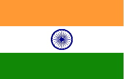
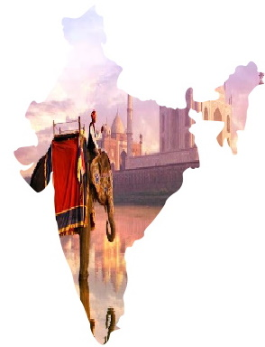

Iндія |
 | |
| Див. також: |
Респу́бліка І́ндія або І́ндія, Бга́рат (англ. Republic of India, гінді भारत गणराज्य, Bhārat Gaṇarājya) — країна в Південній Азії. На північному заході межує з Пакистаном; на півночі — з КНР, Непалом і Бутаном; на сході — з М'янмою і Бангладеш. На півдні вузька Полкська протока і Манарська затока відділяють її від Шрі-Ланки. Протокою між островами Великий Нікобар і Суматра проходить морський кордон між Індією та Індонезією. Територія — 3 166 829 км² (є 7-ю країною у світі за географічною площею). Довжина з півночі на південь — понад 3000 км; з заходу на схід — близько 2000 км. Кількість населення — 1 млрд. 358 млн осіб (2013 р.; у 1990 р. — 844 млн.) Це друга за величиною населення, — після Китаю, — держава на планеті Земля. Столиця — Нью-Делі. Найбільші міста: Колката (понад 16 млн жителів), Мумбаї (Бомбей) (понад 15 млн жителів), Ченнаї (Мадрас) (6 млн жителів), Хайдарабад (5 млн жителів), Бенгалуру (4,5 млн жителів), Ахмедабад (4 млн жителів) За рівнем розвитку економіки (паритет купівельної спроможності) Індія займає 4-е місце у світі. Грошова одиниця — індійська рупія = 100 пайсам. Експорт: чай, кава, залізо, сталь, спеції та прянощі, текстиль, коштовне каміння та ювелірні вироби, техніка, хімікати, шкіра та шкіряні вироби, риба. Партнери в експорті: США (17 %), Об'єднані Арабські Емірати (8.8 %), Китай (5.5 %), Гонконг (4.7 %), Велика Британія (4.5 %), Сінгапур (4.5 %) (2004). Імпорт: нафта, машини та механізми, коштовне каміння, міндобрива, хімікати. Партнери в імпорті: Китай (6.1 %), США (6 %), Швейцарія (5.2 %), Бельгія (4.4 %) (2004) Офіц. мова — гінді та (тимчасово) англійська, також 21 регіональна мова. |
 |